EEG6: Diferenciando actividad epileptiforme de elementos del EEG que se parecen a la actividad epileptiforme pero no lo son
Encontrar elementos del EEG que parecen actividad epileptiforme es relativamente fácil porque son afilados, destacan,
rompen el ritmo... Sería fácil simplemente llamar a cualquier elemento sospechoso en el EEG actividad epileptiforme. Por desgracia,
misclasificar actividad normal como actividad epileptiforme tiene consecuencias graves para el paciente. Ser capaz de reconocer
cuándo un elemento del EEG sospechoso no es actividad epileptiforme es tan importante como reconocer cuándo es actividad epileptiforme.
Leyendo esta página aprenderás algunas ideas básicas para descartar que algunos elementos sospechosos del EEG sean actividad epileptiforme.
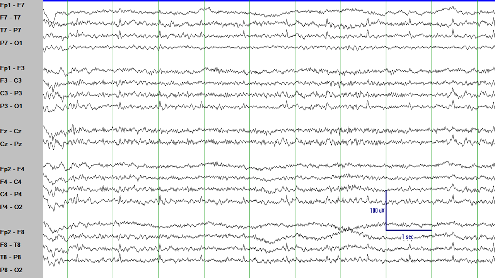
En esta figura puedes ver actividad sospechosa en la región temporal izquierda (mira a los canales F7-T7 y T7-P7).
Su contorno es afilado. Rompe el ritmo. Fíjate que aparece frecuentemente, regularmente, como un reloj. Más o menos una vez por segundo.
¿Te recuerda a algo? ¿Qué sucede aproximadamente una vez por segundo?
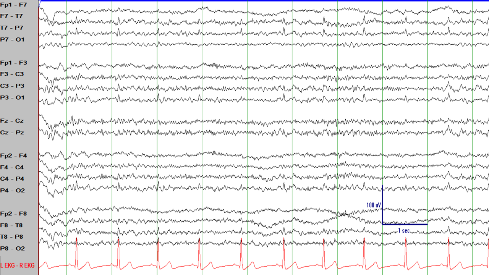
Mismo segmento del EEG que en la figura previa. ¿Qué ocurre aproximadamente 60 veces por minuto?
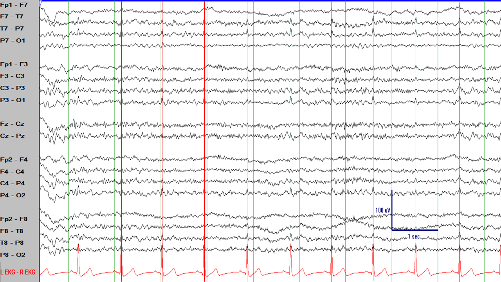
Mismo segmento del EEG que en la figura previa. Estos elementos afilados del EEG ocurren al mismo tiempo que los complejos QRS
en el canal que registra el ECG y son, por lo tanto, artefacto del ECG, no actividad epileptiforme.
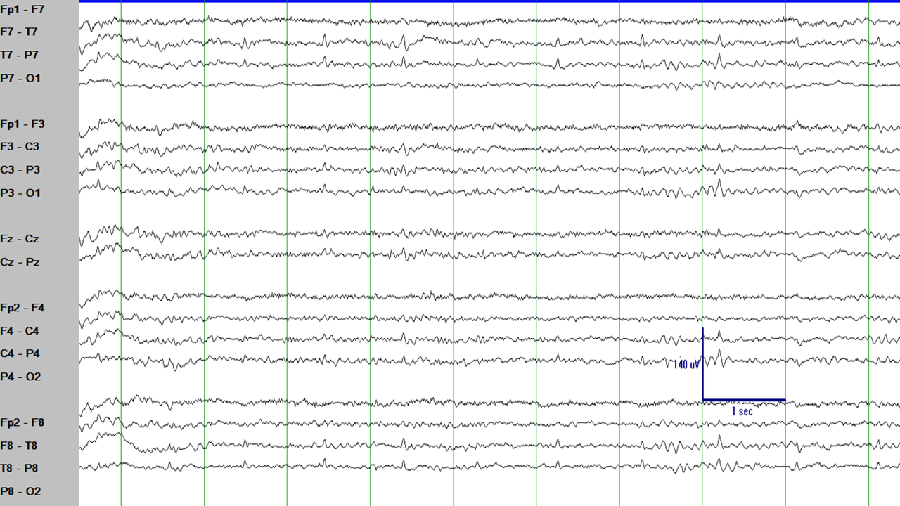
Otro ejemplo. Estos parecen más convincentes y más afilados.
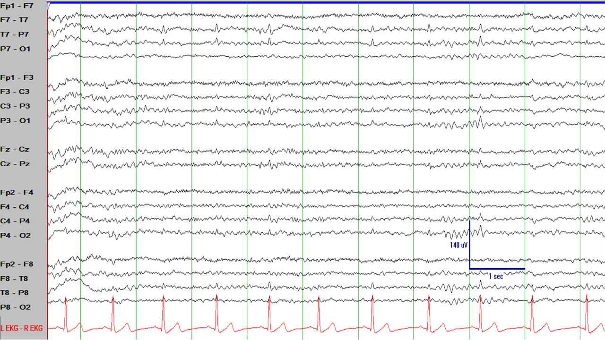
(Mismo segmento del EEG que en la figura anterior). Pero una mirada rápida al canal del ECG muestra que...
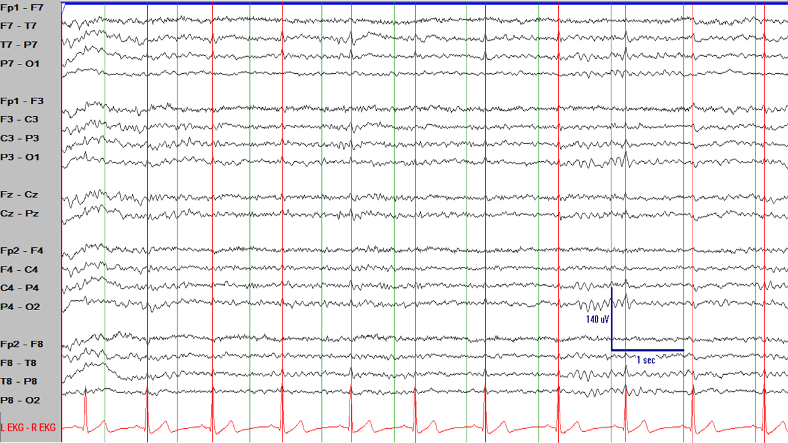
(Mismo segmento del EEG que en la figura anterior). ...aparecen al mismo ritmo que el complejo QRS en el ECG-->artefacto del ECG.
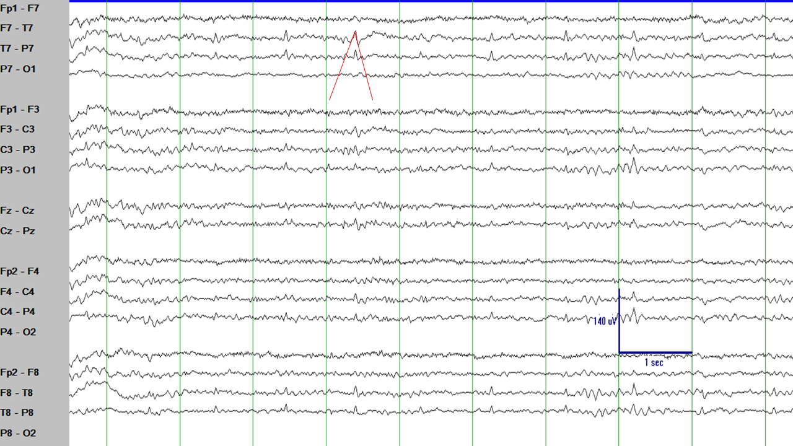
Una consideración más sutil es que si uno considera las dos líneas convergiendo para formar un pico afilado
la primera línea no es más inclinada que la segunda.
El artefacto del ECG es simplemente la transmisión de la actividad eléctrica generada en el sistema de conducción del corazón y que es captada
por los electrodos en la cabeza. Recuerda que la actividad eléctrica generada en el sistema de conducción del corazón es mucho más alto en voltaje
que la actividad eléctrica generada en el cerebro, de tal manera que la actividad eléctrica del corazón puede ser vista en la cabeza incluso si
el generador está más alejado de los electrodos del EEG que el cerebro. Artefactos similares pueden ser producidos por actividad eléctrica
cercana al paciente como máquinas en la UCI (ventiladores, bombas de infusión, etc.) o teléfonos móbiles (celulares en latinoamérica).
La clave es encontrar el ritmo e investigar si hay alguna fuente eléctrica de ese ritmo alrededor (o dentro) del paciente.
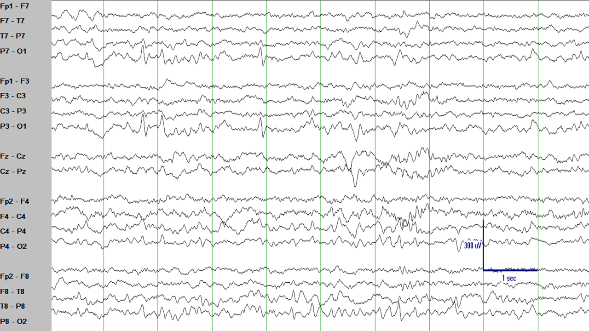
Hay unos elementos de contorno afilado en los segundos 2 y 4 de este segmento del EEG en los canales P7-O1 y P3-O1.
Llaman la atención, rompen el ritmo del resto del EEG. ¿Son descargas epileptiformes? Quizás. De todas formas, hay algunas cosas
que lo hacen menos probable: 1) su voltaje es relativamente alto, pero casi no tienen un campo eléctrico alrededor (fíjate en los canales
T7-P7, C3-P3, y en el lado derecho en los canales P4-O2 y P8-O2, ¿no esperarías más campo eléctrico alrededor?), y 2) no hay inversión de fase
(las descargas epileptiformes en un montaje bipolar apuntan una contra la otra en el punto de máxima negatividad en el cuero cabelludo).
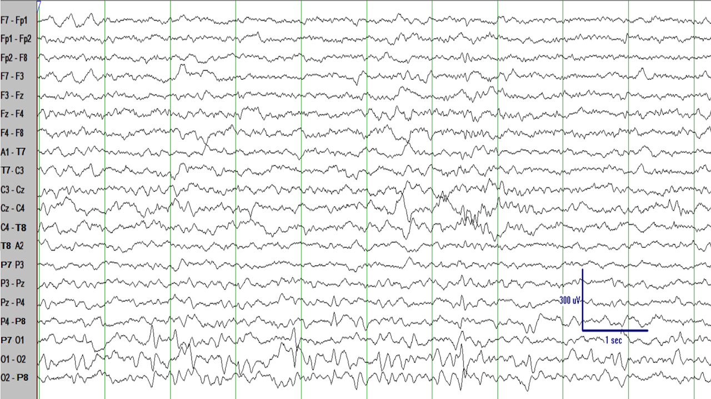
Mismo segmento del EEG que en la figura anterior pero con un montaje diferente (montaje bipolar transverso).
Todavía no hay un campo eléctrico convincente en este montaje. Los elementos sospechosos son ondas agudas transitorias occipitales
en el sueño (POSTS), una variante normal.
Las ondas agudas transitorias occipitales en el sueño (POSTS) se ven frecuentemente en el sueño ligero. Tienen una morfología
triangular. Son completamente normales, son una variante normal. No las misclasifiques como actividad epileptiforme.
Una buena manera de reconocer los POSTS y no confundirlos con descargas epileptiformes es que típicamente aparecen sólo
durante el sueño ligero: cuando el paciente entra en fase II del sueño los POSTS tienden a desaparecer, lo que te debe hacer
sospechar porque la mayoría de actividad epileptiforme tiende a aparecer más frecuentemente y más prominentemente en la fase II del sueño.
¿Qué te parecen los elementos afilados en la siguiente figura?
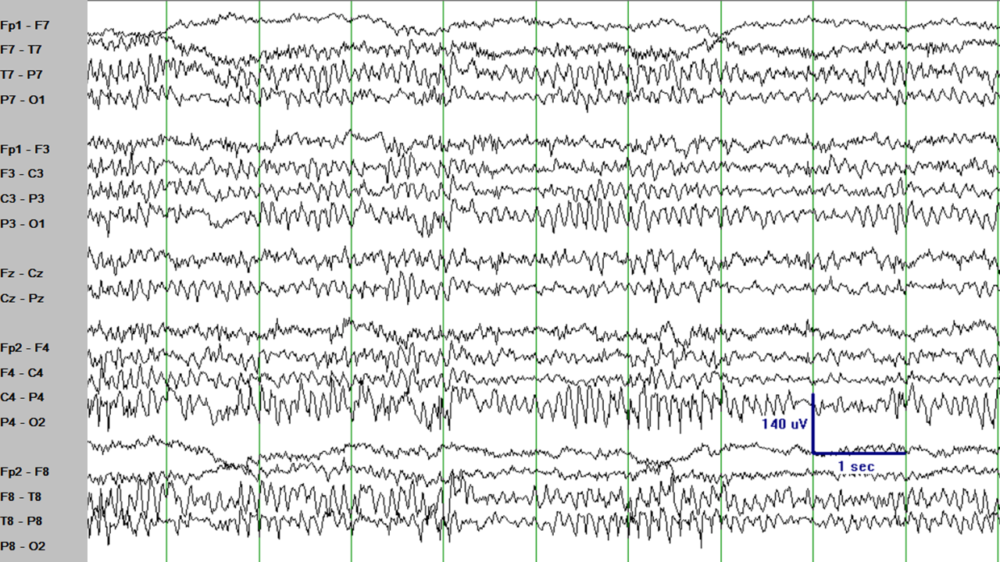
Algunos de los elementos con contornos afilados en los canales P4-O2 y P8-O2 llaman la atención, tienen un contorno afilado,
e incluso se puede argumentar que hay algo de campo eléctrico en los canales C4-P4 y T8-P8 e incluso en los canales posteriores en el hemisferio
izquierdo. Parece actividad epileptiforme, ¿verdad?
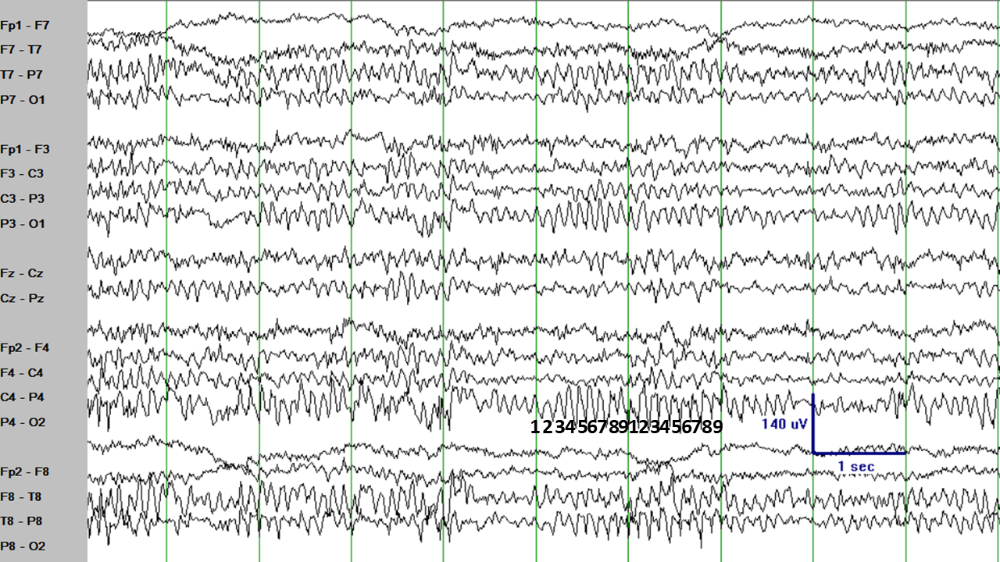
(Mismo segmento del EEG que en la figura anterior). De todas maneras, hay algo peculiar en esos elementos: son muy rítmicos.
Ocurren muy regularmente. Ocurren aproximadamente 9 veces por segundo y este ritmo no cambia de segundo a segundo. Cubre una parte de la figura e
intenta predecir qué elementos vienen después. Esos elementos del EEG no rompen el ritmo. Son un poco predecibles.
Cuando las descargas en el EEG ocurren más de 5 veces por segundo es poco probable que sean descargas epileptiformes. Piensa que las descargas
epileptiformes son descargas eléctricas anormales que alteran el ritmo normal de descarga de las neuronas. Tras las descargas epileptiformes, lleva un
poco de tiempo al cerebro recuperarse y producir una nueva descarga epileptiforme o un ritmo normal del EEG. Piensa en esto como otra regla general:
si un elemento del EEG ocurre 6 o más veces por segundo con un ritmo más o menos regular, es poco probable que sean descargas epileptiformes. También,
si su frecuencia y apariencia es más o menos la misma cada vez que aparecen, es poco probable que sean descargas epileptiformes.
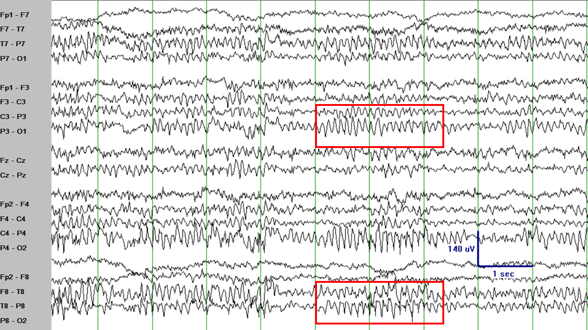
(Mismo segmento del EEG que en la figura de arriba). Los elementos con un contorno afilado aparecen como un ritmo posterior dominante,
simplemente con un contorno más afilado de lo habitual. De hecho, esta variante normal se llama "ritmo posterior dominante afilado".
Es completamente normal. No lo misclasifiques como actividad epileptiforme.
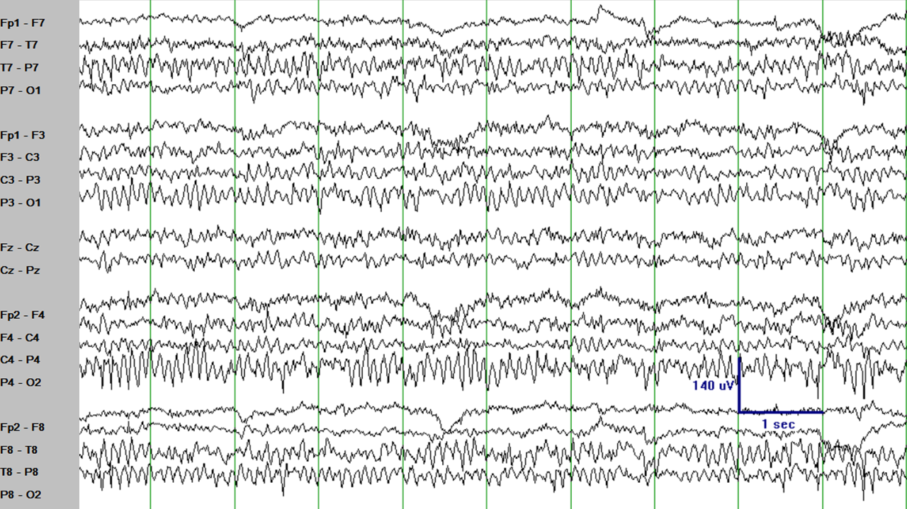
Otro ejemplo de un ritmo posterior dominante afilado. En este ejemplo, es incluso más claro que el ritmo a veces aparece más afilado y
a veces más típico del ritmo posterior dominante sin un límite claro entre ambos. No lo misclasifiques como actividad epileptiforme.
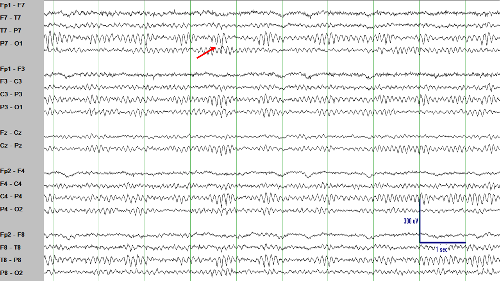
El ritmo posterior dominante a veces aparece más afilado de lo habitual. Algunas veces incluso parece tener una inversión de fase negativa
(elementos de contorno afilado que apuntan uno contra otro) como se señala con la flecha roja. La clave para identificar esos elementos como normales
es que no son muy distintos que los otros elementos normales alrededor.
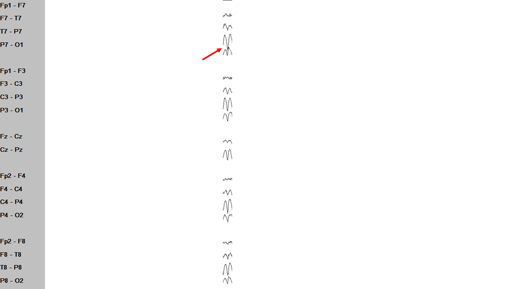
Si consideramos este elemento aisladamente, aparece de contorno bastante afilado, incluso tiene un campo eléctrico
que tiene sentido anatómicamente. Evaluando este elemento por sí solo te llevaría seguramente a llamarlo una descarga epileptiforme...
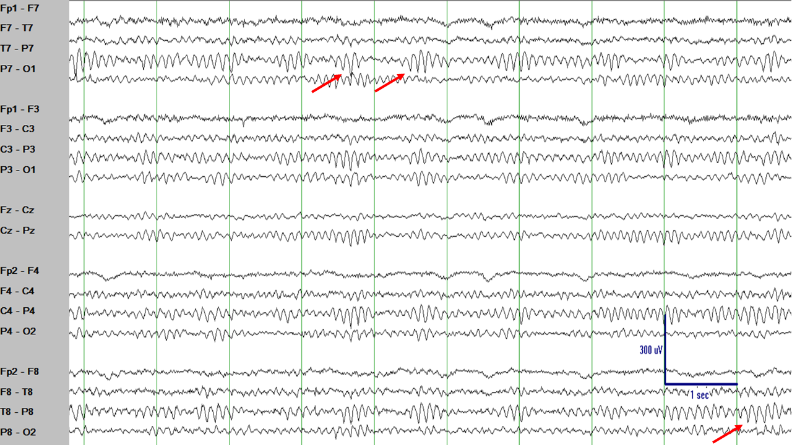
...pero si se considera ese elemento en su contexto te das cuenta de que se parece bastante a otros elementos del EEG que son simplemente
parte del ritmo posterior dominante. Por lo tanto, puedes concluir que el elemento que parecía sospechoso era simplemente parte del ritmo posterior dominante.
Mismo segmento del EEG que en la figura anterior en un montaje distinto (montaje referencial con la referencia en el electrodo Cz). En este
montaje incluso se hace más evidente que no hay rotura del ritmo, simplemente son partes del ritmo posterior dominante más o menos prominentes.
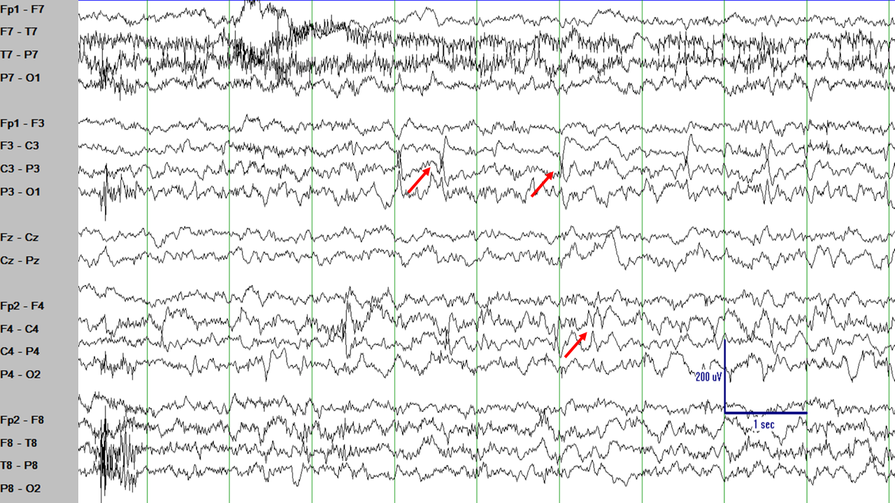
Compara el ritmo regular y predecible de las variantes normales del EEG en las imágenes anteriores con las puntas en C3 y C4 en este
segmento del EEG. Las puntas en este segmento del EEG son diferentes de los ritmos del EEG y no se parecen a nada en el resto del segmento de EEG.
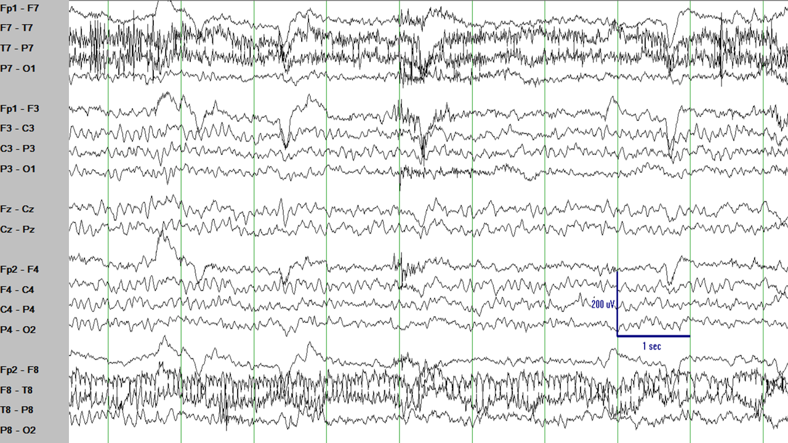
El electrodo T8 no está bien fijado al cuero cabelludo y, por lo tanto, se separa del cuero cabelludo
frecuentemente. Los canales F8-T8 tienen elementos con contornos afilados que son imágenes en reflejo de los elementos en el
canal T8-P8, pero aparte de esos dos canales que contienen el (mal) electrodo T8, ninguna de esa actividad se ve en ningún
otro sitio del EEG. Esta actividad es artefacto del electrodo.
RESUMEN
Hay muchas variantes normales y muchos artefactos en el EEG y no debes misclasificarlas como descargas epileptiformes.
Cuando sospeches que algunos elementos en el EEG pueden ser descargas epileptiformes, pregúntate:
"¿Ocurren de forma rítmica y es su frecuencia
de 6 Hz o superior?" La actividad rítmica con una frecuencia de 6 Hz o superior es poco probable que sea actividad epileptiforme. Piensa en lo que
puede estar causando esas descargas rítmicas, mira el video del EEG (¿hay respiradores o bombas de infusión alrededor del paciente?)
"¿Tienen un
campo eléctrico que tiene sentido anatómicamente?" Si el elemento en cuestión sólo afecta uno o dos canales o si afecta
canales que no están cerca anatómicamente, entonces es poco probable que sea actividad epileptiforme.
"¿Este elemento del EEG ocurre
sólo en una de las fases del ciclo sueño-vigilia?" Generalmente, la actividad epileptiforme tiende a ser más prominente y frecuente en las fases I y II del sueño.
Los elementos sólo ocurren en una fase específica del ciclo sueño-vigilia y después desaparecen del resto del EEG es poco probable que sean
descargas epileptiformes.
"¿Los elementos del EEG con contornos afilados se parecen a otros elementos normales del EEG?" Si los elementos en cuestión
se parecen a elementos normales del EEG, posiblemente sean tambien elementos normales del EEG.
Estás aprendiendo cada vez más. ¡Continúa el gran trabajo!